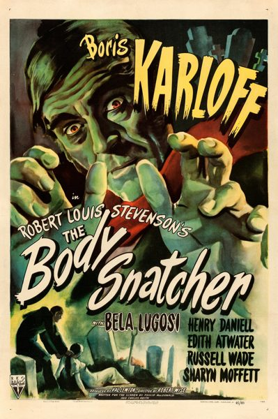

The Body Snatcher

Starring: Boris Karloff, Bela Lugosi, Henry Daniell
Director: Robert Wise
Writer: Val Lewton
Producer: Val Lewton
The Body Snatcher is a 1945 American horror film directed by Robert Wise, based on the 1884 short story of the same name by Robert Louis Stevenson. Philip MacDonald adapted the story for the screen, and producer Val Lewton, credited as "Carlos Keith", modified MacDonald's screenplay.
Trivia
- Based on The Body Snatcher (short story by Robert Louis Stevenson).
- The Body Snatcher was one of three films that Boris Karloff made with producer Val Lewton at RKO Radio Pictures from 1945 to 1946, the other two being Isle of the Dead (1945) and Bedlam (1946).
- In a 1946 interview with Louis Berg of the Los Angeles Times, Karloff discussed his reasons for leaving Universal Pictures and working with Lewton.
- Lewton also worked on the screenplay, writing under the pen name of "Carlos Keith". When the casting of Bela Lugosi was suggested to possibly add marquee value to the film, he signed a deal with RKO, and Lewton and MacDonald wrote the small role of Joseph for him.
Previous Showings
5 Runs • 5 Festivals
All runs on record (5):
- November 8 - 10, 2000Horror Programw/ The Leopard Man
- March 14 - 16, 2007Film Noir, Val Lewton, 1930s musicals and more!w/ White Heat
- February 17 - 18, 2011Winter 2011 Early Bette Davis, Val Lewton and morew/ Bedlam
- April 21 - 23, 2017The Films of Val Lewtonw/ Isle of the Dead
- September 26 - 27, 2024Film Noir plus Val Lewtonw/ The Glass Key